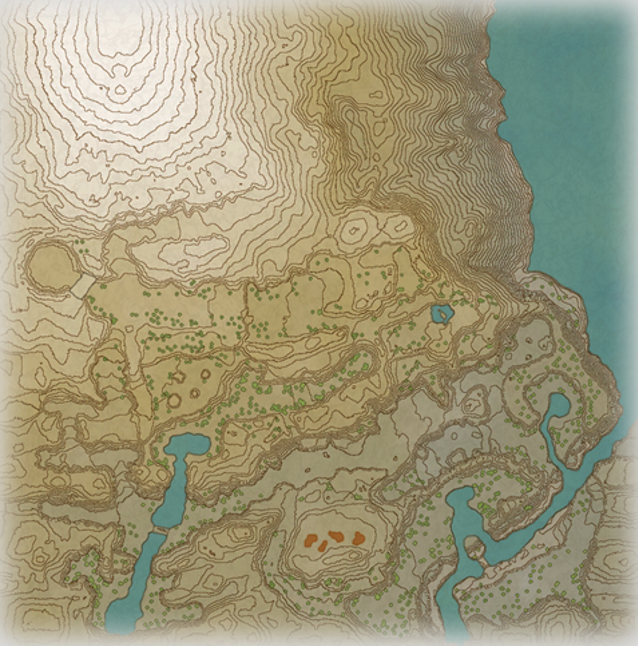

Wisps, Unown, Old Verse, and Dig Spots Locations Guide
Click an icon to check it off.
Hover to see its location. Hover images have come from Serebii. Verses and dig spots don't have images.
Coronet Highlands
